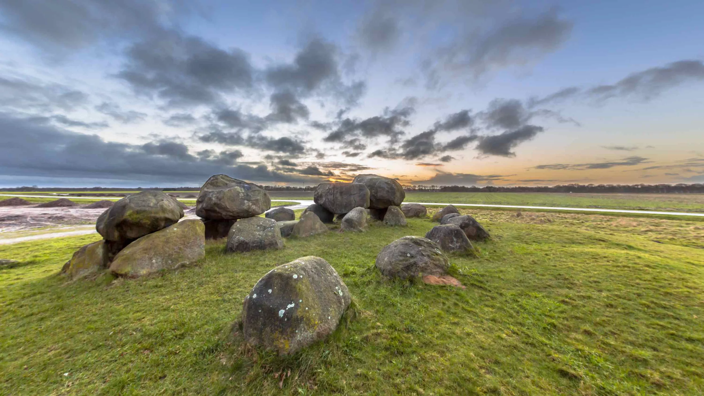

Onze mooiste routes
Van binnendoorwegen tot bergpassen

Onderweg genieten
Rust, ruimte en avontuur

On the road again!
Volg onze reisverhalen
Van binnendoorwegen tot bergpassen
Rust, ruimte en avontuur
Volg onze reisverhalen
Onze reizen, routes en verhalen op één plek.
Gisteren zijn we Coevorden geweest, in het plaatselijk museum was een tentoonstelling over het ontstaan van de stad, er was een mooi gemaakte videopresentatie. Ook was er een afdeling die het slavenverleden en de relatie met de West Indische Compagnie en VOC Verbeeldde. Ook was plek ingeruimd voor, de in Coevorden geboren, generaal van Heutz.
We hadden gelezen dat er in Tiendeveen een alpacaboerderij was, en die wilden we natuurlijk bezoeken.
Toen we er enkele honderden meters van verwijderd waren kwamen we bij een weg aan waar we de keuze hadden tussen een (te) smal fietspad en een onverharde weg. We kozen voor het laatste, toen we halverwege waren was de weg dusdanig onverhard dat we door diepe kuilen gevuld met water moesten rijden. We hebben er voor gekozen toch maar een stukje door de berm te rijden om op het fietspad te geraken.
Later ging het fietspad ook over in een onverharde weg.
We hebben de moed opgegeven en dus geen alpaca`s gezien.
We zijn door een prachtig landschap terug gereden naar Borger, waar we in het centrum een restaurant hebben opgezocht om een troostrijk drankje tot ons te nemen.
Vandaag stond een bezoek aan het Drents Museum De "Buitenplaats" op het programma.
Daar was de "Mucha Experience " te zien. Er waren geen posters of schilderijen van de, van oorsprong, Tsjechische schilder te zien , maar er was een geweldige video presentatie. In een grote zaal kwam het beeld en geluid van alle kanten.
Het was een overweldeginde beleving.
Hier is een video te zien waarin een stuk van de presentatie te zien is.
We zijn in Drenthe, om precies te zijn in Borger.
We konden gebruik maken van een gunstige aanbieding en hier voor een week een stacaravan huren.
We zijn gisteren, na een fileloze rit, aangekomen.
Het was wel even slikken toen we op de parkeerplaats stonden en zagen dat ons onderkomen alleen te voet te bereiken was.
Na een paar keer op en neer lopen in een mals regenbuitje hadden we alle bagage binnen en konden we van een welverdiend drankje genieten.
We hebben de verwarming een tandje hoger gezet, het is best nog koud, hier en daar ligt nog een hoopje sneeuw
Vandaag zijn we naar Assen getogen, De expositie Wunderkammer in het Drents Museum bevat ook
Microkosmos
,de wereld in een Wunderkammer.Hier komen klassieke Wunderkammer-objecten, hedendaagse rariteiten en beeldende kunst samen. Een visueel spektakel waarin de magie van verzamelen tot leven komt.
Na een smakelijk lunch in het centrum van Assen was het tijd om huiswaarts te keren omdat er een paar belangrijke schaatsritten in de Olympische Winterspelen op het programma stonden

Huisje 210
Ons onderkomen voor de komende week

Het lange pad naar de auto
Er staan heel huisjes op het park
Toch hebben we voldoende privacy

Drents Museum Assen
De expositie Wunderkammer
Zeer gevariërde tentoonstelling

Drents Museum Assen
Prachtig ingerichte zalen
Een aanrader